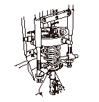
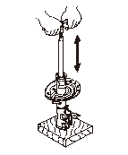
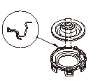
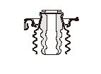
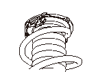
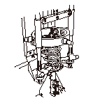
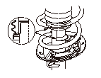
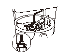

フロント ダンパの分解、点検、組立
専用工具
コイル スプリング コンプレッサ AKKLS-RSP-0100*
コイル スプリング コンプレッサ スタンド KLK-31-96*
*専用指定市販工具
分解
ダンパ アッセンブリ（A）をコイル スプリング コンプレッサ（B）に取付け、スプリングを圧縮する。
必要以上にスプリングを圧縮しないこと。
コイル スプリング コンプレッサの使用方法は、スプリング コンプレッサの取扱説明書を参照する。
六角レンチ（C）でダンパ ロッド（D）を保持し、12mmナット（E）を取外す。
ダンパを手で支えておくこと。
コイル スプリング コンプレッサからダンパ アッセンブリを取外し、展開図を参照してダンパ アッセンブリを分解する。

点検
12mmナットをロッドに取付ける。
ダンパ ロッドを図のように手で押込み、力を抜いたときに自然に一定の速さで伸びるか点検する。ロッドが自然に伸びない場合は、封入ガスが漏れているので、ダンパ ユニットを交換する。また、オイル漏れや異音、変形などの点検も、合わせて行う。
ダンパ ユニットの廃棄は、ガスを抜いてから行うこと。

組立
展開図
を参考にして、分解した各部品を組立てる。
アッパ スプリング シート クリップ（A）をアッパ スプリング シート（B）に組付ける。
•
アッパ スプリング シート クリップの切り欠き部（C）をアッパ スプリング シートの突起部（D）に合わせる。
•
アッパ スプリング シート クリップの爪部（E）をアッパ スプリング シートのふちにはめ込む。

バンプ ストップ ラバー（A）とダストカバー（B）をアッパ スプリング シートに組付ける。
バンプ ストップ ラバー上部とダストカバー上部をアッパ スプリング シート内のへこみ（C）へ確実にはめ込む。

アッパ スプリング シート クリップ（A）にスプリング（B）を取付け、スプリングの上部端面（C）をアッパ スプリング シート クリップのストッパ（D）に突き当てる。
アッパ スプリング シート クリップが、スプリングに確実に取付けられていることを確認する。
スプリング下部端面にスプリング シート ラバーを取付ける。

スプリングをコイル スプリング コンプレッサ（A）にセットして軽く圧縮し、ダンパ ユニット（B）をスプリングの下から差込む。

ダンパ ユニット（A）のロア スプリング シート位置決め穴（B）にスプリング シート ラバー突起部（C）を合わせて取付ける。
ダンパ アッセンブリを組立後、ダンパ ユニットにダスト カバー（D）を図のように取付ける。
ダンパ ロッドにダンパ ベアリングを取付ける。

ダンパを手で支えておき、ダンパ ロッドの段付き部（A）がダンパ ベアリングに突き当たるまでスプリングを圧縮する。
スプリングは必要以上に縮め過ぎないこと。ロッドの突出し寸法はベアリング上面から
45mm。
六角レンチ（B）でダンパ ロッド（C）を保持し、12mmナット（D）を規定トルクで締付ける。
ダンパ アッセンブリをコイル スプリング コンプレッサから取外す。


 コイル スプリング コンプレッサの使用方法は、スプリング コンプレッサの取扱説明書を参照する。
コイル スプリング コンプレッサの使用方法は、スプリング コンプレッサの取扱説明書を参照する。